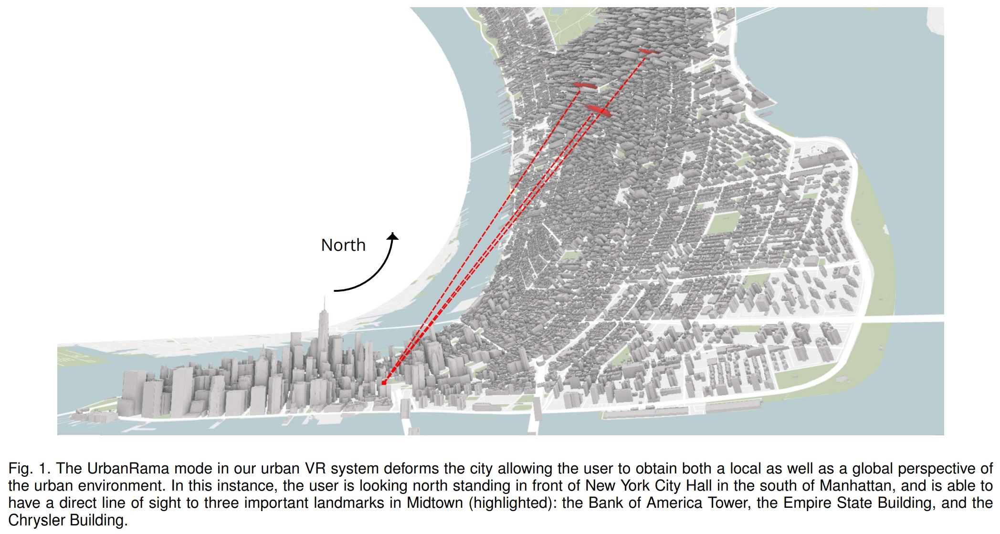
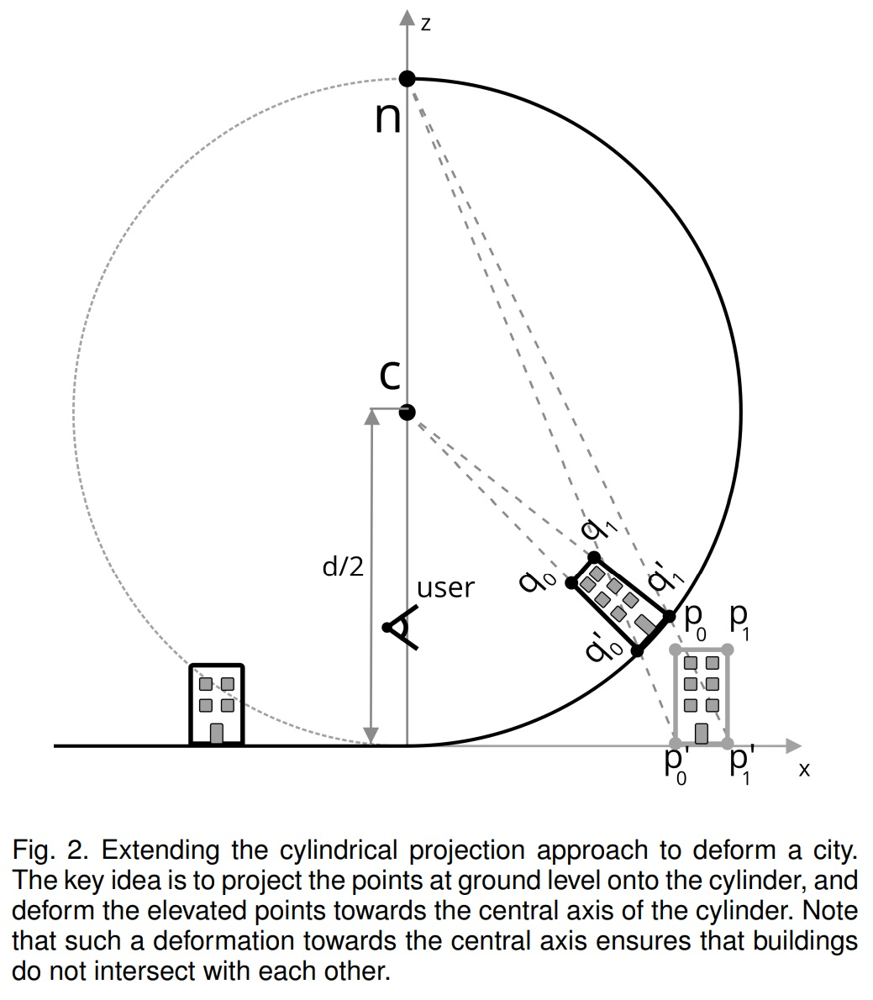
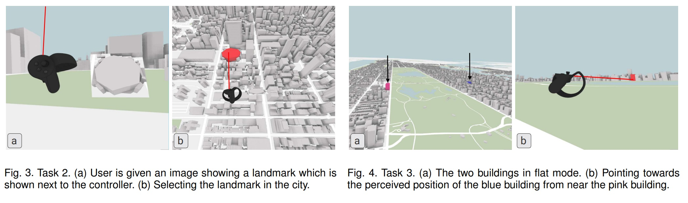
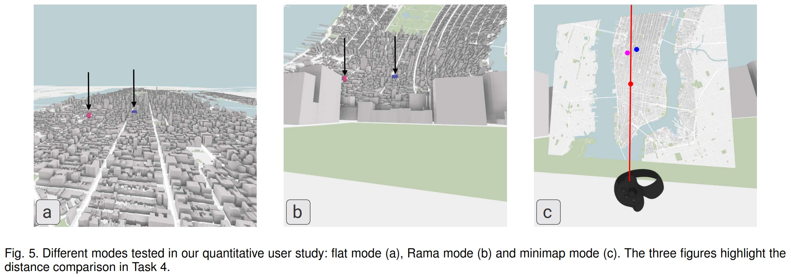

Study of UrbanRama
VR navigation in the virtual city is always difficult. Because of the shelter from the buildings surrounding, the user is unable to identify their own location and the target location without any annotations in a local view. Spatial perception will be lost totally. The best way to help navigation is the global view. However, in the traditional methods, the user can only focus from one perspective at one time, which leads to attraction distraction.
This paper introduces a new intuitive navigation interface called “UrbanRama” to realize “Focus +Context” mode providing a mix of both the local and global view simultaneously. It warps the environment based on the cylindrical projection. The author conducted qualitative and quantitative user studies and concluded that the new method can deliver a perfect spatial perception in navigation. And the warp of the environment will not affect the distance and the orientation perception.
The desired properties of the system are:
- R1. Provide a local as well global perspective during the exploration process. This allows users to preserve context without having to constantly switch between different perspectives.
- R2. Ability to quickly locate and move to building locations/points of interest.
- R3. Have a small number of controls. This is especially important to not overwhelm users, who, while willing to embrace technology, are not power users.
The projected coordinate (x; y; z) of a point (X; Y; 0) on the plane on this cylinder is computed as:
The system uses Oculus Rift as the VR headset. UrbanRama only uses one handler. The function of the handler of three developed versions are shown as follows. The final version enables the user to change altitude, move forward, fly up, and change the viewer mode (flat or Rama mode).
The author’s group did both qualitative and quantitative user studies. In the qualitative user study, they placed the users who are working and living in New York city to a random place in Virtual New York city and ask them to identify the street and the block. And in the quantitative user study, users were required to navigate to the landmark, search the provided target, comparing the distance and the orientation perception under the tow modes (flat and Rama mode). They concluded that the “Focus + Context” view provided by Rama mode combining local and global perspectives shows a great effectiveness in spatial perception and VR navigation. And the warps of the virtual city environment do not affect the distance and the orientation perception.
 Chen, S., Miranda, F., Ferreira, N., Lage, M., Doraiswamy, H., Brenner, C., Defanti, C., Koutsoubis, M., Wilson, L., Perlin, K., & Silva, C. T. (2021). UrbanRama: Navigating Cities in Virtual Reality. IEEE Transactions on Visualization and Computer Graphics. https://doi.org/10.1109/TVCG.2021.3099012